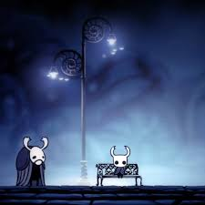
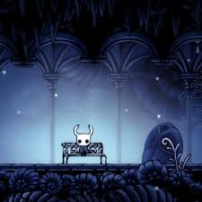
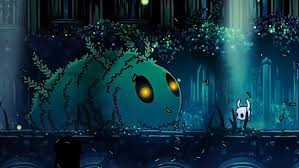
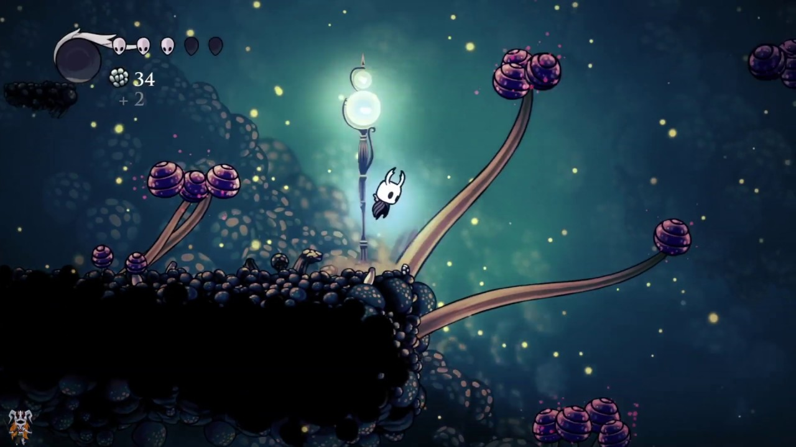
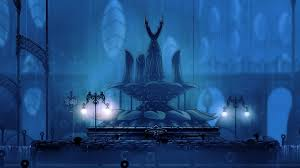
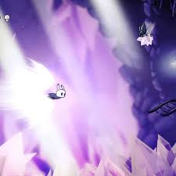
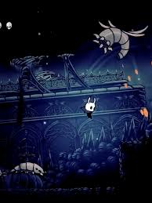
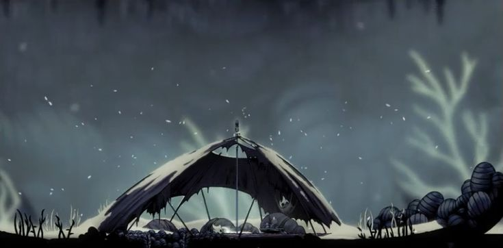

Mapas de Hallownest
Explorar Hallownest es descifrar un laberinto antiguo. Cada zona posee su propia atmósfera, ecosistema y secretos. Gracias a la labor del cartógrafo Cornifer, podemos navegar por estos túneles. A continuación, presentamos un análisis detallado de cada región principal que compone el corazón del reino.

Bocasucia: El Pueblo Desvanecido
Conocido como "el pueblo más triste de Hallownest", es la superficie y el único lugar seguro. Aquí se encuentran los pocos sobrevivientes que aún mantienen la cordura.
- Puntos clave: Tienda de Sly, Tienda de Iselda, El Confesionario de Jiji.
- Ambiente: Melancólico, viento constante, música suave.
Cruces Olvidados
El centro neurálgico del reino. Conecta casi todas las áreas principales. Tras avanzar en el juego, se transforma en los Cruces Infectados, bloqueando caminos con crecimientos de luz naranja.
- Tienda de Salubra · Falso Caballero · Estación del Ciervo


Sendero Verde
Una zona exuberante llena de vegetación, lagos de ácido y vida silvestre protegida por los Unn. Es el primer lugar donde el Caballero encuentra a Hornet.
Páramos Fúngicos
Dominado por esporas, hongos gigantes y la orgullosa Tribu de las Mantis. Es una zona de plataformas rítmicas donde el rebote en los hongos es esencial para navegar.

Hogar de la Aldea Mantis y el acceso principal a Nido Profundo.

Ciudad de Lágrimas
La capital del reino, donde siempre llueve debido a los lagos que se encuentran sobre ella. Es el área más grande y detallada, hogar de la élite y los centros de investigación de alma.
- Jefes: Maestro de Almas, Caballeros Vigía.
- NPCs: Forjaguijones, Lemm el Buscador, Quirrel.
Cumbre de Cristal
Una mina masiva de cristales rosas con propiedades mágicas. La verticalidad es el desafío principal aquí. Los antiguos mineros ahora trabajan como cascarones vacíos controlados por la infección.


Nido Profundo
El área más hostil y oscura de Hallownest. No fue parte del reino del Rey Pálido. Está infestada de arañas, trampas y pasillos estrechos que se derrumban.
"Donde la luz no se atreve a entrar y los extraños son devorados vivos."
Límite del Reino
La frontera este del mundo, cubierta por una "nieve" constante que en realidad es la ceniza que cae del cadáver gigante de un Wyrm. Aquí se encuentra el Coliseo de los Tontos.

Cuenca Antigua
Ubicada debajo de la Ciudad de Lágrimas. Es un lugar desolado que guarda la entrada al Palacio Blanco y al Abismo. Aquí enfrentas al Receptáculo Roto.
Zona de Lore Crítico